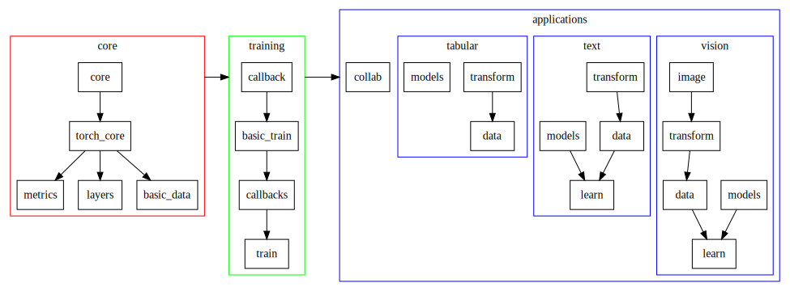

Welcome to fastai¶
The fastai library simplifies training fast and accurate neural nets using modern best practices. It's based on research in to deep learning best practices undertaken at fast.ai, including "out of the box" support for vision, text, tabular, and collab (collaborative filtering) models. If you're looking for the source code, head over to the fastai repo on GitHub. For brief examples, see the examples folder; detailed examples are provided in the full documentation (see the sidebar). For example, here's how to train an MNIST model using resnet18 (from the vision example):
path = untar_data(URLs.MNIST_SAMPLE)
data = ImageDataBunch.from_folder(path)
learn = ConvLearner(data, models.resnet18, metrics=accuracy)
learn.fit(1)
Installation¶
To install fastai, we recommend conda (replace cuda92 with your CUDA toolkit version):
conda install -c pytorch -c fastai fastai pytorch-nightly cuda92For alternative installations, including pip and CPU-only options, see the fastai readme.
Reading the docs¶
To get started quickly, click Applications on the sidebar, and then choose the application you're interested in. That will take you to a walk-through of training a model of that type. You can then either explore the various links from there, or dive more deeply into the various fastai modules.
We've provided below a quick summary of the key modules in this library. For details on each one, use the sidebar to find the module you're interested in. Each module includes an overview and example of how to use it, along with documentation for every class, function, and method. API documentation looks, for example, like this:
An example function¶
Types for each parameter, and the return type, are displayed following standard Python type hint syntax. Sometimes for compound types we use type variables. Types that are defined by fastai or Pytorch link directly to more information about that type; try clicking Image in the function above for an example. The docstring for the symbol is shown immediately after the signature, along with a link to the source code for the symbol in GitHub. After the basic signature and docstring you'll find examples and additional details (not shown in this example). As you'll see at the top of the page, all symbols documented like this also appear in the table of contents.
For inherited classes and some types of decorated function, the base class or decorator type will also be shown at the end of the signature, delimited by ::. For vision.transforms, the random number generator used for data augmentation is shown instead of the type, for randomly generated parameters.
Module structure¶
Imports¶
fastai is designed to support both interactive computing as well as traditional software development. For interactive computing, where convenience and speed of experimentation is a priority, data scientists often prefer to grab all the symbols they need, with import *. Therefore, fastai is designed to support this approach, without compromising on maintainability and understanding.
In order to do so, the module dependencies are carefully managed (see next section), with each exporting a carefully chosen set of symbols when using import *. In general, for interactive computing, you'll want to import from both fastai, and from one of the applications, such as:
from fastai import *
from fastai.vision import *
That will give you all the standard external modules you'll need, in their customary namespaces (e.g. pandas as pd, numpy as np, matplotlib.pyplot as plt), plus the core fastai libraries. In addition, the main classes and functions for your application (fastai.vision, in this case), e.g. creating a DataBunch from an image folder and training a convolutional neural network (with ConvLearner), are also imported.
If you wish to see where a symbol is imported from, either just type the symbol name (in a REPL such as Jupyter Notebook or IPython), or (in most editors) wave your mouse over the symbol to see the definition. For instance:
ConvLearner
Dependencies¶
At the base of everything are the two modules core and torch_core (we're not including the fastai. prefix when naming modules in these docs). They define the basic functions we use in the library; core only relies on general modules, whereas torch_core requires pytorch. Most type-hinting shortcuts are defined there too (at least the one that don't depend on fastai classes defined later). Nearly all modules below import torch_core.
Then, there are three modules directly on top of torch_core:
data, which contains the class that will take aDatasetor pytorchDataLoaderto wrap it in aDeviceDataLoader(a class that sits on top of aDataLoaderand is in charge of putting the data on the right device as well as applying transforms such as normalization) and regroup then in aDataBunch.layers, which contains basic functions to define custom layers or groups of layersmetrics, which contains all the metrics
This takes care of the basics, then we regroup a model with some data in a Learner object to take care of training. More specifically:
callback(depends ondata) defines the basis of callbacks and theCallbackHandler. Those are functions that will be called every step of the way of the training loop and can allow us to customize what is happening there;basic_train(depends oncallback) definesLearnerandRecorder(which is a callback that records training stats) and has the training loop;callbacks(depends onbasic_train) is a submodule defining various callbacks, such as for mixed precision training or 1cycle annealing;learn(depends oncallbacks) defines helper functions to invoke the callbacks more easily.
From data we can split on one of the four main applications, which each has their own module: vision, text collab, or tabular. Each of those submodules is built in the same way with:
- a submodule named
transformthat handles the transformations of our data (data augmentation for computer vision, numericalizing and tokenizing for text and preprocessing for tabular) - a submodule named
datathat contains the class that will create datasets specific to this application and the helper functions to createDataBunchobjects. - a submodule named
modelsthat contains the models specific to this application. - optionally, a submodule named
learnthat will containLearnerspeficic to the application.
Lastly, the module tta (for Test Time Augmentation) depends on basic_train.
Here is a graph of the key module dependencies:
